How one notes vault and Claude Code became a working system for a platform engineer: capture, briefings, upgrades, a compliance boundary, and the daily loop
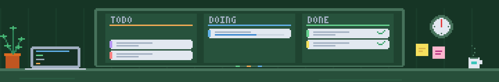
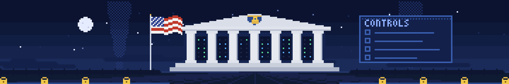
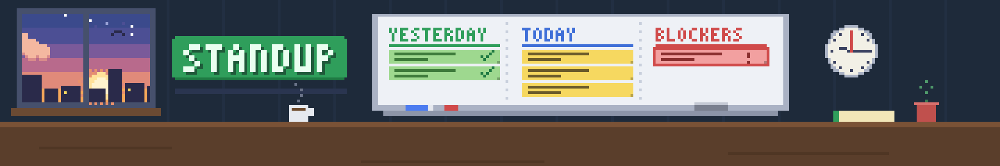
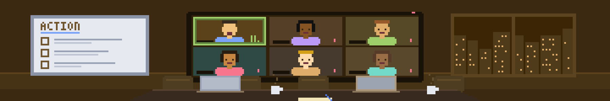
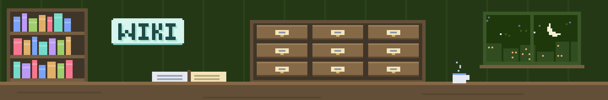
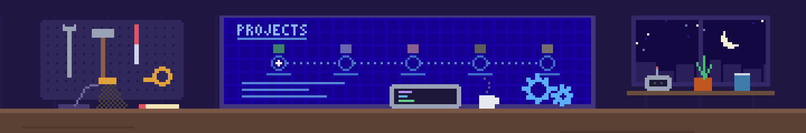
🧠 Obsidian⚡ Claude Code☸️ Kubernetes🛡️ Guardrails🎨 Pixel banners
Kyle McIntire · a team talk
🔒 Recordings are from the author's real vault, pixelated for privacy.
Agenda🧭What we'll cover (about 20 minutes)
🧩1 · The patternThe problem, the shape of the notes, and the live dashboards on top of them.
☸️2 · A platform engineer's dayNews and pins at 06:00, the upgrade calendar, Jira, PRs, one live work-on, and the compliance boundary.
🛡️3 · Trust and startGuardrails, checks, and a starter vault plus rules file you can copy this week.
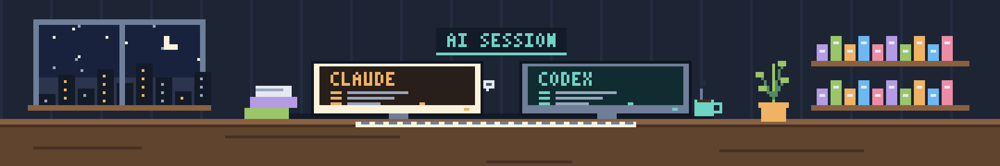
🎯 Takeaway to aim for: plain files, a rules file, one read-only skill. It works in any editor.
Why😵💫The platform team problem
🧩 One task, six toolsA Jira epic, PRs in a utilities repo and the infra repos, the ops team's maintenance calendar, Slack threads, mail and a boundary GitLab MR. Restarting means touring all of them.
📰 Release firehoseEKS, Karpenter, Flux, Argo CD, Bottlerocket and Chainguard all ship weekly. The real question: does it touch a version we pin?
🔁 Repeated ritualsStandup notes, end-of-day Jira comments, PR announcement emoji, the Friday status update. Same steps every time.
🔒 BoundariesThe compliance boundary is unreachable from the laptop, CVE IDs must not leak into chat, and an agent that can write anywhere is hard to trust.
🎯 Goal: capture in seconds, restart a ticket in one command, never miss a pinned-version change, and never be surprised by what Claude changed.
Scale📊What exists today
🧰20+Claude Code skills in a plugin the vault publishes itself
📝2,400+notes, counted live on the Home dashboard
🌳1,700+git commits as a backup trail
⏰5schedules: news 06:00, upgrade calendar 06:30, preferences 18:45, Friday status, importer every 5 min
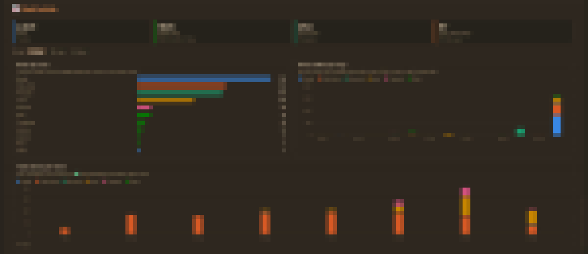
📊 Home's live stats panel🕸️ Obsidian's graph view replaying the vault growing, sped up
Architecture🏗️The vault at a glance
⏰ Runs it
🧠 ObsidianEditing, hubs, Bases, live chart dashboards
⚡ Claude CodeSkills run as /vault-skills:name
⏱️ launchd + Claude appNews 06:00 · calendar 06:30 · preferences 18:45 · Friday status · importer every 5 min
🧩 Logic
📜 RulesCLAUDE.md, plus nested ones for sensitive folders
🧰 Skills plugin20 skills, published as the vault-skills plugin
🐍 ScriptsImporters, checker, link tools, calendar sync, banner engine
🔌 Access
📁 Filesystem + gitBulk edits, hidden folders, history
🔗 Obsidian MCP / CLISearch, patch, move with links kept
🌐 Work systemsJira · Confluence · Slack · GitHub · Outlook · Backstage, read-only by default
☁️ Obsidian SyncNotes, attachments, settings between Mac and PC
🌳 Git to GitHubBackup, plus hidden folders like .plugins/
🎯 Only the Logic row is hand-built. Start with just the rules file.
The shape🏗️Records, views, templates
📐 TemplateDefines what a Jira task, standup, meeting or project note looks like.
→
📄 RecordOne note per real thing, with properties: type, status, url, summary.
→
🪟 ViewHubs, Bases and chart dashboards read the properties. Change one value, every view updates.
✅ Jira task🗓️ meeting and standup📁 project
Plain Markdown, so Claude, grep, scripts and git all read it; links connect notes, folders only give a rough home
Values are functional: 🟢 Active must match the Base filter exactly
History is kept: dated changelogs, one standup note per day, frozen archives instead of deletions
The real thing🏠Home: the command centre
Recorded from the live vault. The hub gallery is a Base over every type: Hub note.
New📈Every hub has a live dashboard
📁 Project Hub: open tasks, status, days since review🎮 Games Hub: the same toolkit on a game library
📦 One toolkit, Templates/Views/hub-charts/: Dataview JS + inline SVG. No new plugin, hover for numbers, click to open the note.
The real thing💼The work hubs and their dashboards
In use🎬Home to a Jira task, in two clicks
Rhythm🔄A platform engineer's day
🌅 06:00📰 get-news runs headless: EKS, Karpenter, Flux, Argo CD, Bottlerocket, Chainguard, checked against our pins🗓️ 06:30☸️ The ops team's maintenance calendar (EKS upgrades, AMI patching) syncs into the work wiki☕ Morning🧭 start-of-day: last night's plan versus Slack, mail, Jira and PRs; writes today's standup on approval🧑💻 All day⚡ work-on restarts a ticket · 🎙️ recorded meetings become notes · sessions import every 5 min🌙 Wrap-up📝 end-of-day: drafts Jira comments and PR replies, posts only what I pick, adds :merged2: / :gitlab:, writes tomorrow's standup🌆 18:45🧠 learn-preferences reads my own messages and proposes how I like work done📅 Fri 16:00📊 Weekly status draft: Shipped / In progress / Blockers, written nowhere but chat
Platform📰get-news: releases, checked against our pins
📌 Our pinsKarpenter from the Flux add-ons repo, Bottlerocket AMIs from a per-environment versions file, Argo CD from its chart repo.
💬 Six announce channelsPlatform, SRE and release announcement channels, and more.
⚖️ Ranked🚨 Security first, then anything we run or pin, then compliance scope. Gaps listed, never "nothing new".
Platform🗓️The upgrade calendar, in the vault
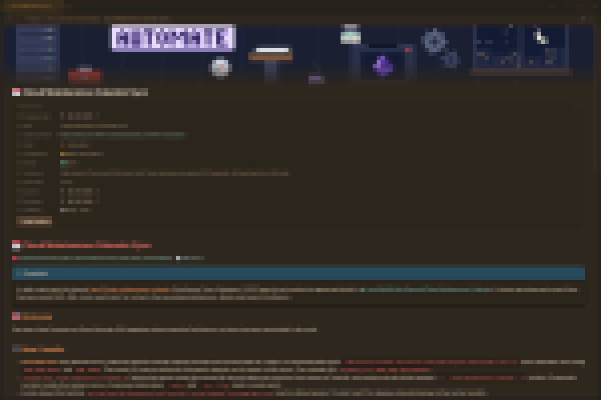
🔐 Confluence exportThe ops calendar's authenticated .ics export, read with the Jira token. No subscribe link needed.
☸️ Team filtereks|ami|karpenter|bottlerocket|cluster|nodepool|govcloud; the rest becomes context.
🚧 Fenced outputRewrites only between its markers in the work wiki note. Preview unless --write; tested.
Morning🧭Jira sync and start-of-day
🎫 jira-to-obsidian-syncOne way, Jira into Tasks/. Matched by url, not filename. Status folders fixed, new comments become dated work-log entries. A watermark note plus forceKeys for stragglers. Never writes to Jira.
🧭 start-of-dayReads PRs, review requests, Jira, today's meetings, unread mail, Slack mentions and DMs. Marks each planned item ✅ done, 🔓 unblocked, 📉 worse, or unchanged, with the evidence. Writes today's standup only on approval, then offers work-on for item one.
✅ Work tasks🤝 One standup note per day📄 Task note with work log
Live demo⚡A briefing in one command
/vault-skills:work-on <JIRA-KEY>
👀 ReadsTask note, Jira (description, comments, children, links), GitHub PRs and checks, local branches and stashes, Slack, Confluence, Backstage ownership, standups.
📋 ProducesWhere it stands, a PR table, ordered next steps with runnable commands, open questions, gaps.
🚫 Never doesComment on Jira, post to Slack, edit a PR, or check out a branch.
Live demo⏯️The briefing, running in the terminal
Silent recording of /vault-skills:work-on on a project note. Waiting time sped up 8x.
Live demo🔍Why the briefing can be trusted
👓Review coverageLists commits no reviewer has seen. A few-second review check means the job was skipped, not that the code was read.
🔀Force-push awareIf the reviewed commit was rewritten, it diffs old and new: dropped files only, or new code nobody read?
🧪Specific failuresThe SonarQube rule, file and line from the check annotations, or the failed log. Never just "a check is red".
📌Stale pinsPinned image tags are compared with the newest in the registry, flagging end-of-life streams.
🏷️Facts vs guessesRecorded facts, inferences and proposals are labelled. A failed source says "failed", not "nothing found".
🧾Commands not runOne command per block, in order, with what a pass looks like, and a plain "I did not run these".
Platform🛡️The compliance boundary is a rule, not a hope
🚫 Never reached from the laptopThe boundary's registry, clusters, GitLab pipelines and MRs. The rules file names them, so no session tries.
📋 One paste for the WorkspaceExact commands for the boundary's remote workspace, chained with labelled echo lines. Only decision or change steps are split out.
🏷️ CVE labels outside the vaultDrafts say CVE-HIGH-1 with severity, package and fixed version, never the CVE or GHSA ID.
☁️ Look-alikes aren't swapsTwo regulated offerings share a cloud partition; one never stands in for the other. Mirror branches are checked before a boundary step.
Wrap-up🌙end-of-day, PR emoji and the standup note
1 · 📥 GatherRead-only: the day's PRs, pushes, Jira changes, task notes, sessions and calendar.
→
2 · 🙋 AskEach draft comment or PR reply with its reason. Posts only what I pick; never resolves threads.
→
3 · 🔀 Reactpr-reactions: :merged2: on merge, :gitlab: only when the change is in the boundary.
As soon as it merges (the boundary mirror tracks main)
Image-sync repo
After its boundary branch is promoted
Boundary infra repo
After its follow-up GitLab MR merges
New🆕Meetings, preferences and diagrams
🎙️meeting-recording-notesLocal whisper transcription and voice matching, names confirmed with me, timestamp links, and only my action items as tasks.
🧠learn-preferencesDaily at 18:45 from my own Slack, Jira, PR, mail and Claude messages. Confidence from evidence; conflicts never overwrite; DMs, HR and health skipped.
🧜mermaid-imageMermaid to a themed PNG and SVG, locally, for Slack, Jira and PRs that don't render it, such as a boundary Argo CD sync order.
1 · 📥 Collect (script)Only the delta since each source's watermark. Claude prompts, PRs and reviews, Jira comments, sent mail, Slack channels (no DMs). Secrets redacted, 120 items per source per run.
2 · ⚖️ Judge (model)Keep durable, general rules ("don't mock the DB"); drop one-offs, other people's preferences, and HR, health or money.
3 · ✍️ Merge (anchored edits)A match bumps its evidence; a new rule enters as low; a contradiction goes to Conflicts and never overwrites.
4 · 🔐 CommitWatermarks move only after the edits land. A crashed run loses nothing; the items come back next time.
🌆 Daily at 18:45 from launchd: headless claude -p, Sonnet at medium effort, a tool allowlist, no session saved. dry-run previews without writing.
Deep dive📏Confidence comes from evidence, not wording
🌱lowOne sighting, and only if it is clearly a stated rule
🌿mediumSeen on two or more different days
🌳highThree or more days and at least two sources
Real rows from my profile
Confidence
Evidence
Announce PRs and MRs in Slack as the team group mention plus a bullet list of links, with :gitlab: marking the boundary GitLab MR
medium
3 · Slack, Claude sessions
Have Claude draft the Slack message for me to post, rather than posting it
medium
8 · Claude sessions
When I can't approve an MR because my commit is in it, say so and ask for a reviewer with no commits in it
low
2 · Slack
🗂️ After two runs: 394 items read, 26 preferences. Unseen for 90 days → Faded; rejected → never re-added; promotion to Claude's memory only on my yes.
Deep dive🗣️Voice and Style: how I actually write
Measured (100 Slack messages)
Length
~25 words, mostly one line
Contains an emoji
58%, all workspace :shortcodes:
Ends with a period
12%
Questions · thanks
11% · 12%
Links
0.6 per message
🎙️ Natural voice onlySlack and mail count; GitHub and Jira text under my login is often Claude-drafted, so it is recorded but not learned from.
✍️ draft-in-voiceDrafts Slack in my style from this note. It never posts.
Self-documenting📒Every automation has a tracking note
The Vault and Work Automations hub: a Base over one note per skill or job, with what runs it and when.
Trust🛡️Guardrails are the design
✅ Claude can, by default
🛑 Needs explicit approval
📖 Read, search and summarise the vault, Jira, PRs, Slack
📤 Stage, commit, push, move, rename or delete
👁️ Preview a script (--write is opt-in)
✍️ Run it with --write on bulk edits
📝 Draft a Jira comment, PR reply or Slack message
📣 Post it, transition a ticket, or resolve a thread
📬 Read mail and calendar, draft a mailto:
✉️ Send, reply, or answer an invite (never)
📋 Write commands for the boundary workspace
🔐 Reach into the boundary (never from the laptop)
🧪 Run make check and tests (read-only)
🗝️ Touch .obsidian/ settings or secrets
📜 Rules live in CLAUDE.md, so every session starts with them. Scheduled jobs run headless with a narrow tool allowlist.
Trust🧪Checks, tests and a linked graph
🩺0Writes from make check: UTF-8, frontmatter, fences, links, icons
🧬7test files with unittest across the scripts
🔗357 → 7daily notes with no inbound link, after one linking pass
👁️--writeopt-in on every importer, link tool and map builder
📊 link_graph_report.py: inbound, outbound and orphan counts per area, read-only
🔗 link_daily_notes.py: prev/next and a fenced Related section, run every 5 minutes by the importer
🤝 Honest reporting: existing findings are kept apart from new ones, and a failed check is never called a pass
Performance⏱️How fast it is
🪟~1.5 sto open a hub and finish drawing its Bases and charts (1.4 to 2.2 s)
🏷️2 msto scan the properties of all 2,402 notes from Obsidian's index
🔗0.6 msto walk all 10,911 resolved links
🧪0.8 sfor 113 unit tests across the vault scripts
Tool
Time
What it covers
check_vault.py
3.8 s
All 2,297 Markdown files: UTF-8, frontmatter, fences, links, icons
link_graph_report.py
0.8 s
Inbound, outbound and orphan counts for every area
link_daily_notes.py (preview)
0.5 s
prev/next and Related links for every daily note
work-on gather, project
0.4 s
Note, changelog, tasks, mentions, repo state
work-on gather, Jira issue
10–20 s
Network-bound: Jira, GitHub PRs and checks, local branches
📏 Measured 2026-10-29 on my Windows PC with Obsidian 1.15: median of three opens, best of two script runs. Obsidian used about 2.4 GB across its processes; the vault is 3,529 files.
Honest notes💻Two machines, two accounts
🍎 Mac (work)
🪟 PC (personal)
Claude account
Work
Personal
Work/ notes
Full access
Left to the Mac, by rule
Scheduled jobs
News, calendar, preferences (launchd)
Session importer only
Sessions imported to
Media/Chats/Work/
Media/Chats/Personal/
Commits
make backup
By explicit path only
🪨 Rough edges that became rules: sync races, Mac-only paths in some skills, plugin lists that don't sync, icons that need git.
Delight🎨A vault you enjoy opening
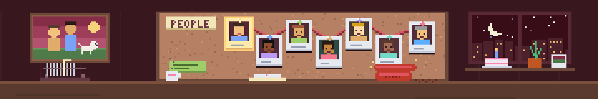
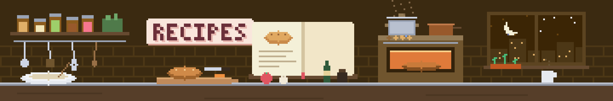
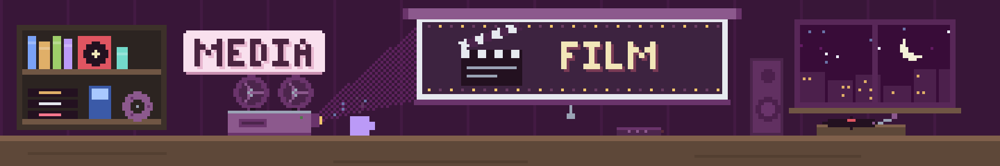
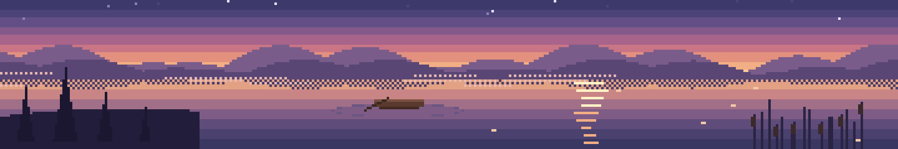
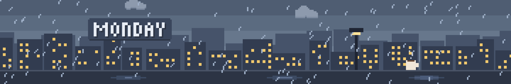
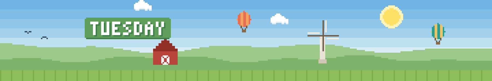
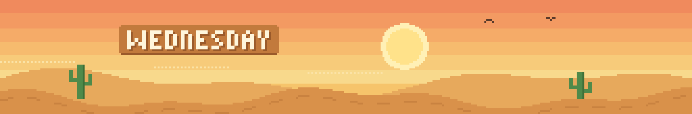
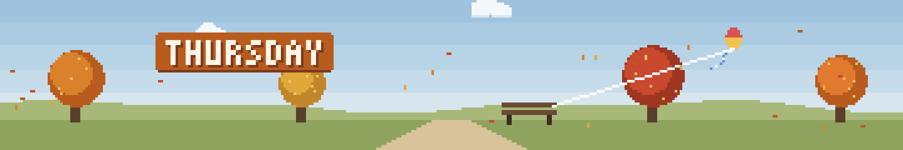
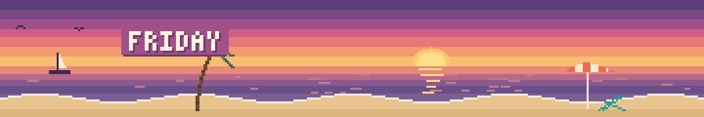
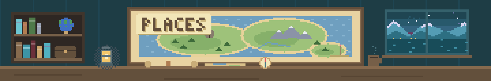
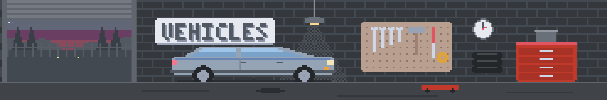
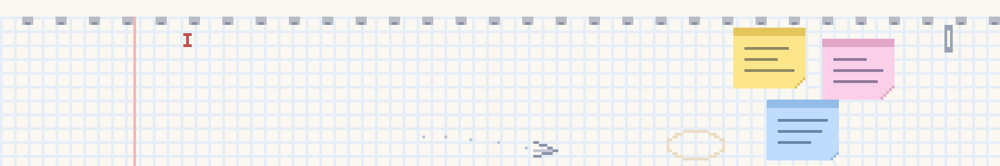
🕹️ Scripts/banners/ renders 1800×300 animated GIFs; pixel-banners wraps it: render to scratch, review frame sheets, then copy in
📅 A banner per weekday on the daily note
🔔 Checkbox Chime: a small local plugin, a tone per task state
🧩 Three pluginsDataview, Tasks, Templater. Bases is built in.
📜 CLAUDE.mdStarter rules for Claude Code or any agent working in the vault.
🔒 Work kept apartGive work notes their own folder, so it can be left out of sync or out of an agent's reach. Check your employer's rules first.
Your turn🧭Map it to your own tool
Building block
What I use
In your setup (examples)
📄 Records with properties
Markdown + YAML frontmatter
Any folder of .md files; Logseq properties; Notion or Confluence database rows
🪟 Views over records
Bases, Dataview, Tasks, hub charts
Notion views, Logseq queries, or a script or rg that prints a table
📐 Templates as schema
Templater + Templates/
Your tool's templates, or a script that stamps out a file
📜 Rules for the agent
CLAUDE.md
A CLAUDE.md in any folder Claude Code opens
🔌 Agent access
Claude Code in the vault + Obsidian MCP
Claude Code in any folder, or your tool's MCP (Atlassian, Notion and others)
🕰️ History
Git + Obsidian Sync
Git on any folder; your tool's version history
✅ Test for any tool: can an agent read and write your notes as files or through an API, and can you roll a change back?
Your turn🧰A starter kit for any notes folder
# CLAUDE.md (project root)
- Read-only by default: never delete, move
or commit unless I ask.
- Keep frontmatter keys and links intact.
- Preview first, write only on approval.
- Never paste secrets, customer data or
boundary CVE IDs into chat or tickets.
# .claude/skills/standup/SKILL.md
---
name: standup
description: Draft today's standup from
recent notes. Use when I say "standup".
---
1. Read the last two daily notes.
2. List done, doing, blocked.
3. Show the draft. Never post it.
🎯 1 · PickThe ritual you repeat most, or the context you hunt for most.
→
✍️ 2 · WriteA SKILL.md: when to use it, the steps, what it must never do.
→
🚧 3 · BoundA rules file: read-only by default, ask before writes.